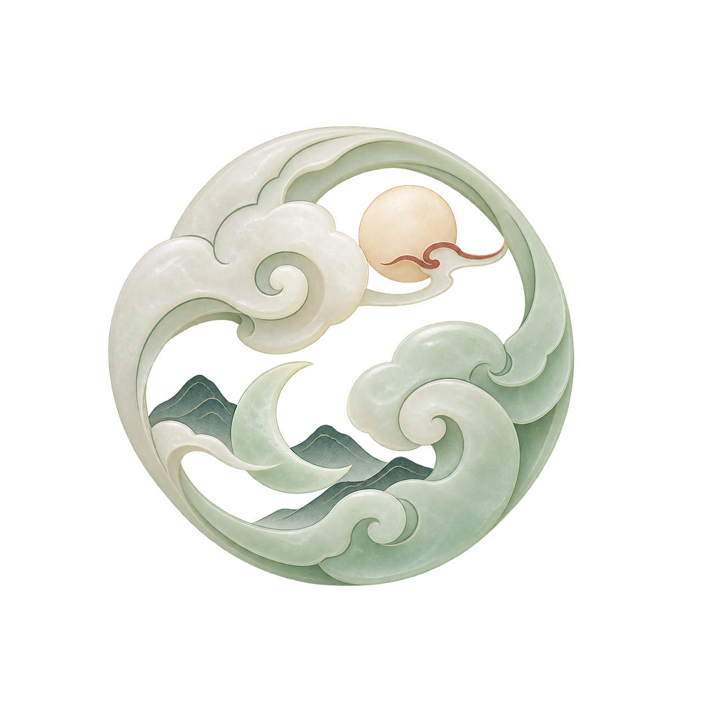

烛龙
山海入卷 · 明晦有度
我的电脑 Windows · 观察版
安
系统状态
烛照此间，诸象平稳。
提交内存保持平稳，近期一次水位提醒已回落。
已提交 / 系统上限26.4 / 48.0 GB
今日提醒1 次 · 已回落
提交内存
系统承诺提供的内存，不等于物理内存
26.4 GB上限 48.0 GB · 当前 55%
已提交过去 24 小时
察
14:02 水位曾达 76%，当前已回落；单次峰值不能证明进程泄漏。
今日 AI 用量
12 次会话 186.4k tokens
¥3.82估算费用
用量与费用
每一次思考，都有迹可循。
示例工具的本地日志统计，费用为估算值。
今日用量186.4k tokens
估算费用¥3.82
会话数量12次
最近会话
示例工具 · 演示| 会话 | 用量 | 估算费用 | 时间 |
|---|---|---|---|
| 烛龙界面方案 | 48.2k | ¥1.06 | 14:32 |
| 整理项目文档 | 36.7k | ¥0.81 | 13:48 |
| 日常代码检查 | 25.1k | ¥0.55 | 11:20 |
仅展示 3 条示例会话，汇总包含当日全部 12 次会话。
Token 构成
- 未缓存输入
- 118.2k
- 输出
- 18.6k
- 缓存读取
- 49.6k
按互斥分类展示；实际计费以工具账单为准。
系统观察记录
变化有来处，回看有依据。
提醒与实际处置分别记录，已回落不代表执行过清理。